1.什么是存储过程？有哪些优缺点？¶
什么是存储过程？有哪些优缺点？
存储过程就像我们编程语言中的函数一样，封装了我们的代码(PLSQL、T-SQL)。
存储过程的优点：
- 能够将代码封装起来
- 保存在数据库之中
- 让编程语言进行调用
- 存储过程是一个预编译的代码块，执行效率比较高
- 一个存储过程替代大量T_SQL语句 ，可以降低网络通信量，提高通信速率
存储过程的缺点：
- 每个数据库的存储过程语法几乎都不一样，十分难以维护（不通用）
- 业务逻辑放在数据库上，难以迭代
Sql执行顺序¶
1. FROM 子句 组装来自不同数据源的数据 2. WHERE 子句 基于指定的条件对记录进行筛选 3. GROUP BY 子句 将数据划分为多个分组 4. 使用聚合函数进行计算 5. 使用HAVING子句筛选分组 6. 计算所有的表达式 7. 使用ORDER BY对结果集进行排序 8. select 获取相应列 9. limit截取结果集
2.什么是视图？以及视图的使用场景有哪些？¶
什么是视图？以及视图的使用场景有哪些？
视图是一种基于数据表的一种**虚表**
- （1）视图是一种虚表
- （2）视图建立在已有表的基础上, 视图赖以建立的这些表称为基表
- （3）向视图提供数据内容的语句为 SELECT 语句,可以将视图理解为存储起来的 SELECT 语句
- （4）视图向用户提供基表数据的另一种表现形式
- （5）视图没有存储真正的数据，真正的数据还是存储在基表中
- （6）程序员虽然操作的是视图，但最终视图还会转成操作基表
- （7）一个基表可以有0个或多个视图
有的时候，我们可能只关系一张数据表中的某些字段，而另外的一些人只关系同一张数据表的某些字段...
那么把全部的字段都都显示给他们看，这是不合理的。
我们应该做到：他们想看到什么样的数据，我们就给他们什么样的数据...一方面就能够让他们只关注自己的数据，另一方面，我们也保证数据表一些保密的数据不会泄露出来...
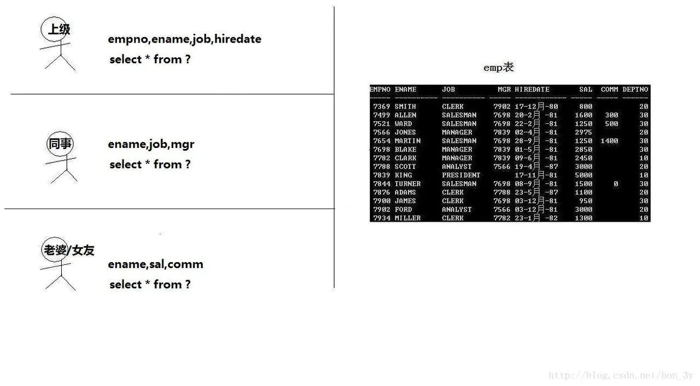
我们在查询数据的时候，常常需要编写非常长的SQL语句，几乎每次都要写很长很长....上面已经说了，视图就是基于查询的一种虚表，也就是说，视图可以将查询出来的数据进行封装。。。那么我们在使用的时候就会变得非常方便...
值得注意的是：使用视图可以让我们专注与逻辑，但不提高查询效率
3.drop、delete与truncate分别在什么场景之下使用？¶
drop、delete与truncate分别在什么场景之下使用？
我们来对比一下他们的区别：
drop table
- 1)属于DDL
- 2)不可回滚
- 3)不可带where
- 4)表内容和结构删除
- 5)删除速度快
truncate table
- 1)属于DDL
- 2)不可回滚
- 3)不可带where
- 4)表内容删除(会新建立一张空白的定义好数据类型的表)
- 5)删除速度快
delete from
- 1)属于DML
- 2)可回滚
- 3)可带where
- 4)表结构在，表内容要看where执行的情况
- 5)删除速度慢,需要逐行删除
- 不再需要一张表的时候，用drop
- 想删除部分数据行时候，用delete，并且带上where子句
- 保留表而删除所有数据的时候用truncate
4.事务相关¶
4.1什么是事务?¶
事务是逻辑上的一组操作，要么都执行，要么都不执行。
事务最经典也经常被拿出来说例子就是转账了。假如小明要给小红转账1000元，这个转账会涉及到两个关键操作就是：将小明的余额减少1000元，将小红的余额增加1000元。万一在这两个操作之间突然出现错误比如银行系统崩溃，导致小明余额减少而小红的余额没有增加，这样就不对了。事务就是保证这两个关键操作要么都成功，要么都要失败。
4.2事物的四大特性(ACID)介绍一下?¶
原子性： 事务被视为不可分割的最小单元，事务的所有操作要么全部提交成功，要么全部失败回滚
一致性： 执行事务前后，数据保持一致，多个事务对同一个数据读取的结果是相同的；
隔离性： 并发访问数据库时，一个用户的事务不被其他事务所干扰，各并发事务之间数据库是独立的；
持久性： 一个事务被提交之后。它对数据库中数据的改变是持久的，即使数据库发生故障也不应该对其有任何影响。
事务的 ACID 特性概念简单，但不是很好理解，主要是因为这几个特性不是一种平级关系：
- 只有满足一致性，事务的执行结果才是正确的。
- 在无并发的情况下，事务串行执行，隔离性一定能够满足。此时只要能满足原子性，就一定能满足一致性。
- 在并发的情况下，多个事务并行执行，事务不仅要满足原子性，还需要满足隔离性，才能满足一致性。
- 事务满足持久化是为了能应对数据库崩溃的情况
4.3并发事务带来哪些问题?¶
在典型的应用程序中，多个事务并发运行，经常会操作相同的数据来完成各自的任务（多个用户对统一数据进行操作）。并发虽然是必须的，但可能会导致以下的问题。
- 脏读（Dirty read）: 当一个事务正在访问数据并且对数据进行了修改，而这种修改还没有提交到数据库中，这时另外一个事务也访问了这个数据，然后使用了这个数据。因为这个数据是还没有提交的数据，那么另外一个事务读到的这个数据是“脏数据”，依据“脏数据”所做的操作可能是不正确的。
- 丢失修改（Lost to modify）: 指在一个事务读取一个数据时，另外一个事务也访问了该数据，那么在第一个事务中修改了这个数据后，第二个事务也修改了这个数据。这样第一个事务内的修改结果就被丢失，因此称为丢失修改。 例如：事务1读取某表中的数据A=20，事务2也读取A=20，事务1修改A=A-1，事务2也修改A=A-1，最终结果A=19，事务1的修改被丢失。
- 不可重复读（Unrepeatableread）: 指在一个事务内多次读同一数据。在这个事务还没有结束时，另一个事务也访问该数据。那么，在第一个事务中的两次读数据之间，由于第二个事务的修改导致第一个事务两次读取的数据可能不太一样。这就发生了在一个事务内两次读到的数据是不一样的情况，因此称为不可重复读。
- 幻读（Phantom read）: 幻读与不可重复读类似。它发生在一个事务（T1）读取了几行数据，接着另一个并发事务（T2）插入了一些数据时。在随后的查询中，第一个事务（T1）就会发现多了一些原本不存在的记录，就好像发生了幻觉一样，所以称为幻读。
不可重复度和幻读区别：
不可重复读的重点是修改，幻读的重点在于新增或者删除。
产生并发不一致性问题主要原因是破坏了事务的隔离性，解决方法是通过并发控制来保证隔离性。并发控制可以通过封锁来实现，但是封锁操作需要用户自己控制，相当复杂。数据库管理系统提供了事务的隔离级别，让用户以一种更轻松的方式处理并发一致性问题。
事务隔离级别有哪些?MySQL的默认隔离级别是?¶
SQL 标准定义了四个隔离级别：
- READ-UNCOMMITTED(读取未提交)： 最低的隔离级别，事务中的修改，即使没有提交，对其它事务也是可见的。允许读取尚未提交的数据变更，可能会导致脏读、幻读或不可重复读。
- READ-COMMITTED(读取已提交)： 一个事务只能读取已经提交的事务所做的修改。换句话说，一个事务所做的修改在提交之前对其它事务是不可见的。 可以阻止脏读，但是幻读或不可重复读仍有可能发生。
- REPEATABLE-READ(可重复读)： 保证在同一个事务中多次读取同样数据的结果是一样的。 对同一字段的多次读取结果都是一致的，除非数据是被本身事务自己所修改，可以阻止脏读和不可重复读，但幻读仍有可能发生。
- SERIALIZABLE(可串行化)： 最高的隔离级别，完全服从ACID的隔离级别。所有的事务依次逐个执行，这样事务之间就完全不可能产生干扰，也就是说，该级别可以防止脏读、不可重复读以及幻读。 强制事务串行执行。需要加锁实现，而其它隔离级别通常不需要。
| 隔离级别 | 脏读 | 不可重复读 | 幻影读 |
|---|---|---|---|
| READ-UNCOMMITTED | √ | √ | √ |
| READ-COMMITTED | × | √ | √ |
| REPEATABLE-READ | × | × | √ |
| SERIALIZABLE | × | × | × |
MySQL InnoDB 存储引擎的默认支持的隔离级别是 REPEATABLE-READ（可重读）。我们可以通过SELECT @@tx_isolation;命令来查看
mysql> SELECT @@tx_isolation; +-----------------+ | @@tx_isolation | +-----------------+ | REPEATABLE-READ | +-----------------+
这里需要注意的是：与 SQL 标准不同的地方在于InnoDB 存储引擎在 **REPEATABLE-READ（可重读）**事务隔离级别下使用的是Next-Key Lock 锁(间隙锁)算法，因此可以避免幻读的产生，这与其他数据库系统(如 SQL Server)是不同的。所以说InnoDB 存储引擎的默认支持的隔离级别是 REPEATABLE-READ（可重读） 已经可以完全保证事务的隔离性要求，即达到了 SQL标准的**SERIALIZABLE(可串行化)**隔离级别。
因为隔离级别越低，事务请求的锁越少，所以大部分数据库系统的隔离级别都是**READ-COMMITTED(读取提交内容):**，但是你要知道的是InnoDB 存储引擎默认使用 **REPEATABLE-READ（可重读）**并不会有任何性能损失。
InnoDB 存储引擎在 分布式事务 的情况下一般会用到**SERIALIZABLE(可串行化)**隔离级别
Mysql的逻辑架构¶
Mysql的逻辑架构如下图：
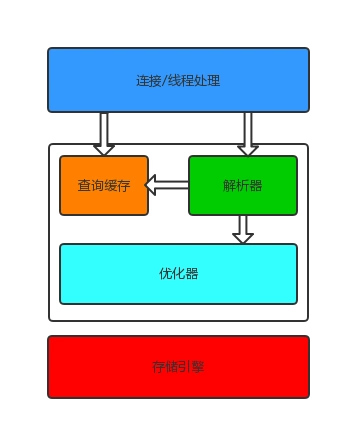
-
最上层是处理客户端过来的连接的。主要做连接处理、授权认证、安全等。Mysql在这一层维护了一个线程池，用于处理来自客户端的连接。Mysql可以使用用户名密码认证，也可以使用SSL基于X.509证书认证。
-
第二层由三部分组成：查询缓存、解析器、优化器。解析器用来解析SQL语句，优化器会对解析之后的语句进行优化。在解析查询前，服务器会先检查查询缓存，如果能在其中找到对应的查询结果，则无需再进行查询解析、优化等过程，直接返回查询结果。存储过程、触发器、视图等都在这一层实现。
-
第三层是存储引擎，存储引擎负责在MySQL中存储数据、提取数据、开启一个事务等等。存储引擎通过API与上层进行通信，这些API屏蔽了不同存储引擎之间的差异，使得这些差异对上层查询过程透明。存储引擎不会去解析SQL。
锁¶
SELECT ... FOR UPDATE; #拍他锁(更新锁更好一点) SELECT ... LOCK In SHARE MODE; #共享锁
MySQL 的锁按照范围可以分为全局锁、表锁、行锁，其中行锁是由数据库引擎实现的，并不是所有的引擎都提供行锁，MyISAM 就不支持行锁，所以文章介绍行锁会以InnoDB引擎为例来介绍
MySQL各存储引擎使用了三种类型（级别）的锁定机制：表级锁定，行级锁定和页级锁定。
1.表级锁定（table-level）
表级别的锁定是MySQL各存储引擎中最大颗粒度的锁定机制。该锁定机制最大的特点是实现逻辑非常简单，带来的系统负面影响最小。所以获取锁和释放锁的速度很快。由于表级锁一次会将整个表锁定，所以可以很好的避免困扰我们的死锁问题。
当然，锁定颗粒度大所带来最大的负面影响就是出现锁定资源争用的概率也会最高，致使并发度大打折扣。
使用表级锁定的主要是MyISAM，MEMORY，CSV等一些非事务性存储引擎。
2.行级锁定（row-level）
行级锁定最大的特点就是锁定对象的颗粒度很小，也是目前各大数据库管理软件所实现的锁定颗粒度最小的。由于锁定颗粒度很小，所以发生锁定资源争用的概率也最小，能够给予应用程序尽可能大的并发处理能力而提高一些需要高并发应用系统的整体性能。
虽然能够在并发处理能力上面有较大的优势，但是行级锁定也因此带来了不少弊端。由于锁定资源的颗粒度很小，所以每次获取锁和释放锁需要做的事情也更多，带来的消耗自然也就更大了。此外，行级锁定也最容易发生死锁。
使用行级锁定的主要是InnoDB存储引擎。
3.页级锁定（page-level）
页级锁定是MySQL中比较独特的一种锁定级别，在其他数据库管理软件中也并不是太常见。页级锁定的特点是锁定颗粒度介于行级锁定与表级锁之间，所以获取锁定所需要的资源开销，以及所能提供的并发处理能力也同样是介于上面二者之间。另外，页级锁定和行级锁定一样，会发生死锁。
在数据库实现资源锁定的过程中，随着锁定资源颗粒度的减小，锁定相同数据量的数据所需要消耗的内存数量是越来越多的，实现算法也会越来越复杂。不过，随着锁定资源颗粒度的减小，应用程序的访问请求遇到锁等待的可能性也会随之降低，系统整体并发度也随之提升。
使用页级锁定的主要是BerkeleyDB存储引擎。
总的来说，MySQL这3种锁的特性可大致归纳如下：
**表级锁：**开销小，加锁快；不会出现死锁；锁定粒度大，发生锁冲突的概率最高，并发度最低；
**行级锁：**开销大，加锁慢；会出现死锁；锁定粒度最小，发生锁冲突的概率最低，并发度也最高；
**页面锁：**开销和加锁时间界于表锁和行锁之间；会出现死锁；锁定粒度界于表锁和行锁之间，并发度一般。
**适用：**从锁的角度来说，表级锁更适合于以查询为主，只有少量按索引条件更新数据的应用，如Web应用；而行级锁则更适合于有大量按索引条件并发更新少量不同数据，同时又有并发查询的应用，如一些在线事务处理（OLTP）系统。
MySQL 提供全局锁来对整个数据库实例加锁。¶
语法：
FLUSH TABLES WITH READ LOCK
这条语句一般都是用来备份的，当执行这条语句后，数据库所有打开的表都会被关闭，并且使用全局读锁锁定数据库的所有表，同时，其他线程的更新语句（增删改），数据定义语句（建表，修改表结构）和更新类的事务提交都会被阻塞。
在mysql 8.0 以后，对于备份，mysql可以直接使用备份锁。
语句：
LOCK INSTANCE FOR BACKUP UNLOCK INSTANCE 复制代码
这个锁的作用范围更广，这个锁会阻止文件的创建，重命名，删除，包括 REPAIR TABLE TRUNCATE TABLE, OPTIMIZE TABLE操作以及账户的管理都会被阻塞。当然这些操作对于内存临时表来说是可以执行的，为什么内存表不受这些限制呢？因为内存表不需要备份，所以也就没必要满足这些条件
三、表锁¶
Mysql的表级别锁分为两类，一类是元数据锁（Metadata Lock，MDL），一种是表锁。
元数据锁(MDL) 不需要显式使用，在访问一个表的时候会被自动加上。这个特性需要MySQL5.5版本以上才会支持，当对一个表做**增删改查的时候**(这里的意思是对表访问还是对表结构进行变化)，该表会被加MDL读锁；当对表做结构变更的时候，加MDL写锁。MDL锁有一些规则：
- 读锁之间不互斥，所以可以多线程多同一张表进行查询。
- 读写锁、写锁之间是互斥的，为了保证表结构变更的安全性，所以如果要多线程对同一个表加字段等表结构操作，就会变成串行化，需要进行锁等待。
- MDL的写锁优先级比MDL读锁的优先级高，但是可以设置max_write_lock_count系统变量来改变这种情况，当写锁请求超过这个变量设置的数后，MDL读锁的优先级会比MDL写锁的优先级高。（默认情况下，这个数字会很大，所以不用担心写锁的优先级下降）
- MDL的锁释放必须要等到事务结束才会释放
所以我们在操作数据库表结构时候必须要注意不要使用长事务，这里具体是什么意思呢？我举个例子说明下：
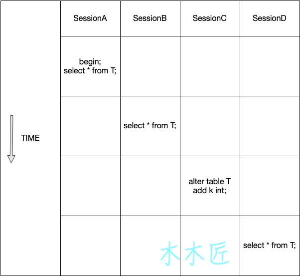
上图表示演示了4个session执行语句，(就是说长事物下一般只是读没有事,但只要有一个想改,那么后面的读写都不行了)
首先SessionA开启了事务没有提交，
接着sessionB执行查询，因为是获取MDL读锁，所以互相不影响，可以正常执行，
SessionC新增一个字段，由于MDL写和读是互斥的，所以SessionC会被阻塞，
之后SessionD开始执行一个查询语句，由于SessionC的阻塞，
所以SessionD也阻塞了。
所以，我们模拟的SessionA的事务是长事务，然后后面执行了修改表结构，会导致后续对该表所有的读写操作都不可行了。所以在实际场景中，如果业务请求比较频繁的时候，对表结构进行修改的时候就有可能导致该库的线程被阻塞满。
表锁 的语法如下：
LOCK TABLES tbl_name [[AS] alias] lock_type [, tbl_name [[AS] alias] lock_type] ... lock_type: { READ [LOCAL] | [LOW_PRIORITY] WRITE } UNLOCK TABLES
表锁分为读锁和写锁，
**读锁(表共享读锁shared)**不互斥，但是获取读锁不能写入数据,其他没有获取到读锁的session也是可以读取表的，所以读锁的目的就是限制表被写。如果表被读锁锁住后，再执行插入语句会报错，报错如下：(读锁的作用主要就是限制表被写)
1099 - Table 'XXXX' was locked with a READ lock and can't be updated
**写锁(表独占写锁Exclusive )**被获取后可以对表进行读写，写锁是互斥的，一旦某个session获取到表的写锁，另外的session无法访问这个表，直到写锁被释放。
表的解锁可以使用unlock tables解锁，也可以客户端口自动解锁。lock tables锁表会独占式的锁住表，除了限制其他线程对该表的读写，也会限制本线程接下来的操作对象。
四、行锁(InnoDB)¶
MySQL的行锁是在引擎层面实现的，所以这里讨论的也是InnoDB引擎下的行锁，下面会详细介绍InnoDB下常见的几种行锁
4.1 共享锁¶
共享锁能允许事务获取到锁后进行读操作，共享锁是不互斥的，一个事务获取到共享锁后，另外一个事务也可以获取共享锁，获取共享锁后不能进行写操作。
4.2 排它锁¶
排他锁允许事务获取到锁后进行更新一行或者删除某一行操作，排他锁顾名思义是互斥的，一个事务获取到排他锁后，其他事务不能获取到排他锁，直到这个锁被释放。
4.3 意向锁(意向锁是mysql内部使用的，不需要用户干预)¶
InnoDB支持多种粒度的锁，允许**行锁和表锁**共存，这里说的**意向锁其实是一种表级别的锁**，但是我把它放在行锁里面是因为它不会单独存在，它的出现肯定会伴随着行锁（共享锁或者排他锁），它主要的目的就是表示将要锁定表中的行或者正在锁定表中的行。
意向锁根据和行锁的组合可以分为：
- 意向排他锁：表明将要在表中的**某些行**获取排他锁
- 意向共享锁：表明将要在表中的某些行获取共享锁
意向锁的获取必须在行锁获取之前，也就是说获取共享锁之前必须先要获取共享意向锁，对于排他锁也是一样的道理。
那么这个意向锁到底有什么作用呢？
解释这个之前，我们先看看意向锁和行锁之前的兼容关系：
| - | 排他锁（X） | 意向排他锁（IX) | 共享锁(S) | 意向共享锁(IS) |
|---|---|---|---|---|
| 排他锁(X） | 冲突 | 冲突 | 冲突 | 冲突 |
| 意向排他锁（IX) | 冲突 | 兼容 | 冲突 | 兼容 |
| 共享锁(S) | 冲突 | 冲突 | 兼容 | 兼容 |
| 意向共享锁(IS) | 冲突 | 兼容 | 兼容 | 兼容 |
在存在行级锁和表级锁的情况下，事务 T 想要对表 A 加 X 锁，就需要先检测是否有其它事务对表 A 或者表 A 中的任意一行加了锁，那么就需要对表 A 的每一行都检测一次，这是非常耗时的。 意向锁在原来的 X/S 锁之上引入了 IX/IS，IX/IS 都是表锁，用来表示一个事务想要在表中的某个数据行上加 X 锁或 S锁。有以下两个规定：
- 一个事务在获得某个数据行对象的 S 锁之前，必须先获得**表**的 IS 锁或者更强的锁；
- 一个事务在获得某个数据行对象的 X 锁之前，必须先获得**表**的 IX 锁。
- 通过引入意向锁，事务 T 想要对表 A 加X 锁，只需要先检测是否有其它事务对**表 A(注意是表不是行)** 加了 X/IX/S/IS 锁，如果加了就表示有其它事务**正在使用这个表或者表中某一行的锁**，因此事务 T 加 X 锁失败 (主要是加排他锁的时候)
这样每个事物获得意向锁以后别的事物想要加锁的时候只需要看有没有表锁就完事了,不用逐行扫描
人家已经加了意向共享锁了,说明要么是前一个事务等待前前一个事务处理,要么是这个事务已经获得了行锁正在进行处理,这时候要是人家是意向排它锁,那就凉凉滚蛋,人家要是意向共享锁那么你也可以加上,并且是当前事务获取的是共享锁,你就可以直接去获取共享锁.如果人家是意向排它锁,你可以加一个意向共享锁等着人家搞完再获取锁.
**任意 IS/IX 锁之间都是兼容的，因为它们只是表示想要对表加锁，而不是真正加锁； S 锁只与 S 锁和 IS 锁兼容，也就是说事务 T 想要对数据行加 S 锁，其它事务可以已经获得对表或者表中的行的 S 锁 **
更新锁¶
更新锁主要在初始阶段用来锁定可能要被修改的资源,这样可以避免使用共享锁升级为排它锁的时候造成的死锁问题
更新锁的特征:加锁与解锁,当一个事物执行update语句,数据库系统会先为事务分配一把更新锁.当读取数据数据完毕,执行更新操作时会把更新锁升级为排它锁
兼容性:更新锁跟共享锁兼容,但是最多只能放置一把更新锁
并发性能:允许多个事务同时读锁定的资源,但不允许其它事务修改它.
封锁协议¶
三级封锁协议
- 一级封锁协议 事务 T 要修改数据 A 时必须加 X 锁，直到 T 结束才释放锁。 可以解决丢失修改问题，因为不能同时有两个事务对同一个数据进行修改，那么事务的修改就不会被覆盖。
- 在一级的基础上，要求读取数据 A 时必须加 S 锁，读取完马上释放 S 锁。 可以解决读脏数据问题，因为如果一个事务在对数据 A 进行修改，根据 1 级封锁协议，会加 X 锁，那么就不能再加 S锁了，也就是不会读入数据。
- 在二级的基础上，要求读取数据 A 时必须加 S 锁，直到事务结束了才能释放 S 锁。 可以解决不可重复读的问题，因为读 A 时，其它事务不能对 A 加 X 锁，从而避免了在读的期间数据发生改变。
4.死锁
死锁是指两个或多个事务在同一资源上相互占用，并请求锁定对方占用的资源，从而导致恶性循环。
当事务试图以不同的顺序锁定资源时，就可能产生死锁。多个事务同时锁定同一个资源时也可能会产生死锁。
锁的行为和顺序和存储引擎相关。以同样的顺序执行语句，有些存储引擎会产生死锁有些不会——死锁有双重原因：真正的数据冲突；存储引擎的实现方式。
检测死锁¶
数据库系统实现了各种死锁检测和死锁超时的机制。InnoDB存储引擎能检测到死锁的循环依赖并立即返回一个错误。
死锁恢复¶
死锁发生以后，只有部分或完全回滚其中一个事务，才能打破死锁，InnoDB目前处理死锁的方法是，将持有最少行级排他锁的事务进行回滚。所以事务型应用程序在设计时必须考虑如何处理死锁，多数情况下只需要重新执行因死锁回滚的事务即可。
外部锁的死锁检测¶
发生死锁后，InnoDB 一般都能自动检测到，并使一个事务释放锁并回退，另一个事务获得锁，继续完成事务。但在涉及外部锁，或涉及表锁的情况下，InnoDB 并不能完全自动检测到死锁， 这需要通过设置锁等待超时参数 innodb_lock_wait_timeout 来解决
死锁影响性能¶
死锁会影响性能而不是会产生严重错误，因为InnoDB会自动检测死锁状况并回滚其中一个受影响的事务。在高并发系统上，当许多线程等待同一个锁时，死锁检测可能导致速度变慢。 有时当发生死锁时，禁用死锁检测（使用innodb_deadlock_detect配置选项）可能会更有效，这时可以依赖innodb_lock_wait_timeout设置进行事务回滚。
MyISAM避免死锁¶
在自动加锁的情况下，MyISAM 总是一次获得 SQL 语句所需要的全部锁，所以 MyISAM 表不会出现死锁。
InnoDB避免死锁¶
- 为了在单个InnoDB表上执行多个并发写入操作时避免死锁，可以在事务开始时通过为预期要修改的每个元祖（行）使用SELECT ... FOR UPDATE语句来获取必要的锁，即使这些行的更改语句是在之后才执行的。
- 在事务中，如果要更新记录，应该直接申请足够级别的锁，即排他锁，而不应先申请共享锁、更新时再申请排他锁，因为这时候当用户再申请排他锁时，其他事务可能又已经获得了相同记录的共享锁，从而造成锁冲突，甚至死锁
- 如果事务需要修改或锁定多个表，则应在每个事务中以相同的顺序使用加锁语句。在应用中，如果不同的程序会并发存取多个表，应尽量约定以相同的顺序来访问表，这样可以大大降低产生死锁的机会
- 通过SELECT ... LOCK IN SHARE MODE获取行的读锁后，如果当前事务再需要对该记录进行更新操作，则很有可能造成死锁。
- 改变事务隔离级别
如果出现死锁，可以用 SHOW INNODB STATUS 命令来确定最后一个死锁产生的原因。返回结果中包括死锁相关事务的详细信息，如引发死锁的 SQL 语句，事务已经获得的锁，正在等待什么锁，以及被回滚的事务等。据此可以分析死锁产生的原因和改进措施。
间隙锁（Next-Key锁）¶
当我们用范围条件而不是相等条件检索数据，并请求共享或排他锁时，
InnoDB会给符合条件的已有数据记录的索引项加锁；
对于键值在条件范围内但并不存在的记录，叫做“间隙（GAP)”，
InnoDB也会对这个“间隙”加锁，这种锁机制就是所谓的间隙锁（Next-Key锁）。
举例来说，假如emp表中只有101条记录，其empid的值分别是 1,2,...,100,101，下面的SQL： Select * from emp where empid > 100 for update; 是一个范围条件的检索，InnoDB不仅会对符合条件的empid值为101的记录加锁，也会对empid大于101（这些记录并不存在）的“间隙”加锁。
InnoDB使用间隙锁的目的，一方面是为了防止幻读，以满足相关隔离级别的要求，
对于上面的例子，要是不使用间隙锁，如果其他事务插入了empid大于100的任何记录，那么本事务如果再次执行上述语句，就会发生幻读；
另外一方面，是为了满足其恢复和复制的需要。有关其恢复和复制对锁机制的影响，以及不同隔离级别下InnoDB使用间隙锁的情况 很显然，在使用范围条件检索并锁定记录时，InnoDB这种加锁机制会阻塞符合条件范围内键值的并发插入，这往往会造成严重的锁等待。
因此，在实际应用开发中，尤其是并发插入比较多的应用，我们要尽量优化业务逻辑，尽量使用相等条件来访问更新数据，避免使用范围条件。 还要特别说明的是，InnoDB除了通过范围条件加锁时使用间隙锁外，如果使用相等条件请求给一个不存在的记录加锁，InnoDB也会使用间隙锁！
悲观锁,乐观锁¶
何谓悲观锁与乐观锁¶
乐观锁对应于生活中乐观的人总是想着事情往好的方向发展，悲观锁对应于生活中悲观的人总是想着事情往坏的方向发展。这两种人各有优缺点，不能不以场景而定说一种人好于另外一种人。
悲观锁¶
总是假设最坏的情况，每次去拿数据的时候都认为别人会修改，所以每次在拿数据的时候都会上锁，这样别人想拿这个数据就会阻塞直到它拿到锁（共享资源每次只给一个线程使用，其它线程阻塞，用完后再把资源转让给其它线程）。传统的关系型数据库里边就用到了很多这种锁机制，比如行锁，表锁等，读锁，写锁等，都是在做操作之前先上锁。
乐观锁¶
总是假设最好的情况，每次去拿数据的时候都认为别人不会修改，所以不会上锁，但是在更新的时候会判断一下在此期间别人有没有去更新这个数据，可以使用版本号机制和CAS算法实现。乐观锁适用于多读的应用类型，这样可以提高吞吐量，像数据库提供的类似于**write_condition机制**，其实都是提供的乐观锁。
两种锁的使用场景¶
从上面对两种锁的介绍，我们知道两种锁各有优缺点，不可认为一种好于另一种，像**乐观锁适用于写比较少的情况下（多读场景），即冲突真的很少发生的时候，这样可以省去了锁的开销，加大了系统的整个吞吐量。但如果是多写的情况，一般会经常产生冲突，这就会导致上层应用会不断的进行retry，这样反倒是降低了性能，所以**一般多写的场景下用悲观锁就比较合适。
乐观锁常见的两种实现方式¶
乐观锁一般会使用版本号机制或CAS算法实现。
1. 版本号机制¶
一般是在数据表中加上一个数据版本号version字段，表示数据被修改的次数，当数据被修改时，version值会加一。当线程A要更新数据值时，在读取数据的同时也会读取version值，在提交更新时，若刚才读取到的version值为当前数据库中的version值相等时才更新，否则重试更新操作，直到更新成功。
举一个简单的例子： 假设数据库中帐户信息表中有一个 version 字段，当前值为 1 ；而当前帐户余额字段（ balance ）为 $100 。
- 操作员 A 此时将其读出（ version=1 ），并从其帐户余额中扣除 $50（ 100-50 ）。
- 在操作员 A 操作的过程中，操作员B 也读入此用户信息（ version=1 ），并从其帐户余额中扣除 $20 （ 100-20 ）。
- 操作员 A 完成了修改工作，将数据版本号加一（ version=2 ），连同帐户扣除后余额（ balance=$50 ），提交至数据库更新，此时由于提交数据版本大于数据库记录当前版本，数据被更新，数据库记录 version 更新为 2 。
- 操作员 B 完成了操作，也将版本号加一（ version=2 ）试图向数据库提交数据（ balance=$80 ），但此时比对数据库记录版本时发现，操作员 B 提交的数据版本号为 2 ，数据库记录当前版本也为 2 ，不满足 “ 提交版本必须大于记录当前版本才能执行更新 “ 的乐观锁策略，因此，操作员 B 的提交被驳回。
这样，就避免了操作员 B 用基于 version=1 的旧数据修改的结果覆盖操作员A 的操作结果的可能。
方式1：版本号机制¶
给表增加一个 version 版本号字段，具体流程如下：
- 读取数据时，将数据的版本号数据一同读出；
- 数据每次发生更新时，将版本号加 1；
- 提交数据时，将当前版本号与之前读出的版本号进行对比。若相同，则更新；否则，更新失败。
方式2：记录时间戳¶
原理与方式一相同，给表增加一个记录操作的时间戳字段，当发生数据更新时，将当前时间戳与更新前获取的时间戳进行对比，若相同，则允许更新，且同时更新操作时间戳字段，否则更新失败。
优点¶
- 不会发生任何锁和死锁
- 可增加吞吐量
- 避免了长事务中的数据库加锁开销
缺点¶
对于写多的场景并不适用，因为当写操作非常频繁时，更新失败的几率就越大，上层逻辑进行retry的次数也会增多，从而降低了系统的性能。
乐观锁的缺点¶
ABA 问题是乐观锁一个常见的问题
1 ABA 问题¶
如果一个变量 V 初次读取的时候是A值，并且在准备赋值的时候检查到它仍然是A值，那我们就能说明它的值没有被其他线程修改过了吗？很明显是不能的，因为在这段时间它的值可能被改为其他值，然后又改回A，那CAS操作就会误认为它从来没有被修改过。这个问题被称为CAS操作的 "ABA"问题。
总结¶
不管是乐观锁还是悲观锁，其目的都是为了保障数据的一致性。乐观锁与悲观锁的区别在于，乐观锁会在更新前比较数据是否发生变化，若变化则更新失败。悲观锁则是等待前一个事务完成才执行自己的操作。
三、存储引擎¶
InnoDB¶
(2)、innodb引擎的4大特性¶
插入缓冲（insert buffer),二次写(double write),自适应哈希索引(ahi),预读(read ahead)
是 MySQL 默认的事务型存储引擎，只有在需要它不支持的特性时，才考虑使用其它存储引擎。 实现了四个标准的隔离级别，默认级别是可重复读（REPEATABLE READ）。在可重复读隔离级别下，通过多版本并发控制（MVCC）+ 间隙锁（Next-Key Locking）防止幻影读。 主索引是聚簇索引，在索引中保存了数据，从而避免直接读取磁盘，因此对查询性能有很大的提升。 内部做了很多优化，包括从磁盘读取数据时采用的可预测性读、能够加快读操作并且自动创建的自适应哈希索引、能够加速插入操作的插入缓冲区等。 支持真正的在线热备份。其它存储引擎不支持在线热备份，要获取一致性视图需要停止对所有表的写入，而在读写混合场景中，停止写入可能也意味着停止读取。
MyISAM¶
设计简单，数据以紧密格式存储。对于只读数据，或者表比较小、可以容忍修复操作，则依然可以使用它。 提供了大量的特性，包括压缩表、空间数据索引等。 不支持事务。 不支持行级锁，只能对整张表加锁，读取时会对需要读到的所有表加共享锁，写入时则对表加排它锁。但在表有读取操作的同时，也可以往表中插入新的记录，这被称为并发插入（CONCURRENT INSERT）。 可以手工或者自动执行检查和修复操作，但是和事务恢复以及崩溃恢复不同，可能导致一些数据丢失，而且修复操作是非常慢的。 如果指定了 DELAY_KEY_WRITE 选项，在每次修改执行完成时，不会立即将修改的索引数据写入磁盘，而是会写到内存中的键缓冲区，只有在清理键缓冲区或者关闭表的时候才会将对应的索引块写入磁盘。这种方式可以极大的提升写入性能，但是在数据库或者主机崩溃时会造成索引损坏，需要执行修复操作。 比较 事务：InnoDB 是事务型的，可以使用 Commit 和 Rollback 语句。 并发：MyISAM 只支持表级锁，而 InnoDB 还支持行级锁。 外键：InnoDB 支持外键。 备份：InnoDB 支持在线热备份。 崩溃恢复：MyISAM 崩溃后发生损坏的概率比 InnoDB 高很多，而且恢复的速度也更慢。 其它特性：MyISAM 支持压缩表和空间数据索引。
2、MySQL中myisam与innodb的区别，至少5点¶
(1)、问5点不同；¶
- 1>.InnoDB支持事物，而MyISAM不支持事物
- 2>.InnoDB支持行级锁，而MyISAM支持表级锁
- 3>.InnoDB支持MVCC, 而MyISAM不支持
- 4>.InnoDB支持外键，而MyISAM不支持
- 5>.InnoDB不支持全文索引，而MyISAM支持。
MySQL索引原理¶
为什么建立索引¶
“索引”是为了能够更快地查询数据。比如一本书的目录，就是这本书的内容的索引，读者可以通过在目录中快速查找自己想要的内容，然后根据页码去找到具体的章节。
数据库也是一样，如果查询语句使用到了索引，会先去索引里面查询，取得数据所在行的物理地址，进而访问数据。
索引的本质¶
索引是帮助mysql高效获取数据的数据结构
索引的优缺点¶
优势：
-
快速检索，减少I/O次数，
-
加快检索速度；
-
根据索引分组和排序，可以加快分组和排序；
- 加快表与表的连接
劣势：
- 索引本身也是表，因此会占用存储空间。
- 索引的维护和创建需要时间成本，这个成本随着数据量增大而增大；
- 构建索引会降低数据表的修改操作（删除，添加，修改）的效率，因为在修改数据表的同时还需要修改索引表。
注意点：小表使用全表扫描更快，中大表才使用索引。超级大表索引基本无效。
索引的分类:¶
索引从实现上说，分成 2 种：聚集索引和非聚集索引（也叫二级索引或者非聚集索引）
1.聚集索引:表记录的排列顺序和索引的排列顺序一致,所以查询快,但是修改慢
2.非聚集索引:表记录的排列顺序和索引的排列顺序不一致
从功能上说，分为 6 种：普通索引，唯一索引，主键索引，复合索引，外键索引，全文索引。
详细说说 6 种索引：
- 普通索引：最基本的索引，没有任何约束。
- 唯一索引：与普通索引类似，但具有唯一性约束。
- 主键索引：特殊的唯一索引，不允许有空值。
- 复合索引：将多个列组合在一起创建索引，可以覆盖多个列。
- 外键索引：只有InnoDB类型的表才可以使用外键索引，保证数据的一致性、完整性和实现级联操作。
- 全文索引：MySQL 自带的全文索引只能用于 InnoDB、MyISAM ，并且只能对英文进行全文检索，一般使用全文索引引擎（ES，Solr）。
注意：主键就是唯一索引，但是唯一索引不一定是主键，唯一索引可以为空，但是空值只能有一个，主键不能为空。
另外，InnoDB 通过主键聚簇数据，如果没有定义主键且没有定义聚集索引， MySql 会选择一个唯一的非空索引代替，如果没有这样的索引，会隐式定义个 6 字节的主键作为聚簇索引，用户不能查看或访问。
简单点说：
- 设置主键时，会自动生成一个唯一索引，如果**之前**没有聚集索引，那么主键就是聚集索引。
- 没有设置主键时，会选择一个不为空的唯一索引作为聚集索引，如果还没有，那就生成一个隐式的 6 字节的索引。
MySql 将数据按照页来存储，默认一页为 16kb，当你在查询时，不会只加载某一条数据，而是将这个数据所在的页都加载到 pageCache 中，这个其实和 OS 的就近访问原理类似。
MySql 的索引使用 B+ 树结构。在说 B+ 树之前，先说说 B 树，B 树是一个多路平衡查找树，相较于普通的二叉树，不会发生极度不平衡的状况，同时也是多路的。
2.2 Hash索引特性¶
只支持包括 “=” "in "在内的等值查询，不支持范围，前缀匹配查询
Hash索引是通过hash函数将，键值直接映射为物理存储地址，使时间复杂度降低到O(1).本身存储是无序的，所以不能通过hash索引避免排序
从二叉搜索树聊起¶
了解过数据结构的朋友应该知道一种叫二叉树的数据结构。二叉树根据用途不同，衍生了不同的变种，比如堆，比如二叉搜索树。
而二叉搜索树中，为了防止极端情况树的高度过大影响查询效率，所以衍生出了一些平衡二叉查找树，最典型的就是AVL和红黑树。
但二叉树在数据量较大时，深度过深，不太适合数据库的查询，所以数据库使用了多叉树。
BTree¶
BTree（又称为B-Tree）是一个**平衡搜索多叉树**。BTree的结构如下图：
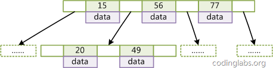
设树的度为2d（d>1），高度为h，那么BTree有以下性质：
- 每个叶子结点的高度一样，等于h；
- 每个非叶子结点由n-1个key和n个指针组成，key和指针相互隔离，结点两端一定是key；
- 叶子结点指针为null；
- 非叶子结点的key都是[key,data]二元组，其中key表示作为索引的键，data为键值所在行的其它列的数据；
在BTree中，对索引列是顺序存储的，所以很适合查找范围数据和ORDER BY操作
B 树的特点是：他会将数据也保存在非页子节点。
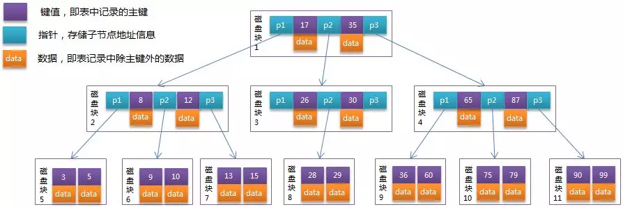
而这个特点会导致非页子节点不能存储大量的索引。
m阶 B树的特性：树中每个节点至多包含m棵子树 若根节点不是叶子节点，则至少包含两颗子树
除根以外的所有非终点节点至少有 (m/2)向上取整棵子树
支持范围查询，前缀匹配查询，等值查询，可以避免排序，
例如order by index相关的列，排序会非常快，因为该列本身就是 有序存储的，查找时间复杂度 log m N(m为底,N的对数，N为总记录数)
B+Tree是BTree的一种变种。B+Tree和BTree的不同主要在于：
- B+Tree中的非叶子结点不存储数据，只存储键值和指针；
- B+Tree的叶子结点没有指针，所有键值都会出现在叶子结点上，且key存储的键值对应data数据的物理地址；
- B+Tree的每个非叶子节点由n个键值key和n个指针point组成；
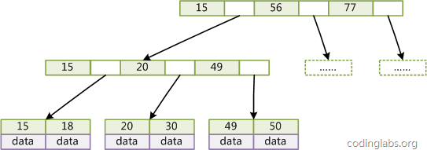
而 B+ Tree 就是针对这个对 B tree 做了优化。如下图所示：
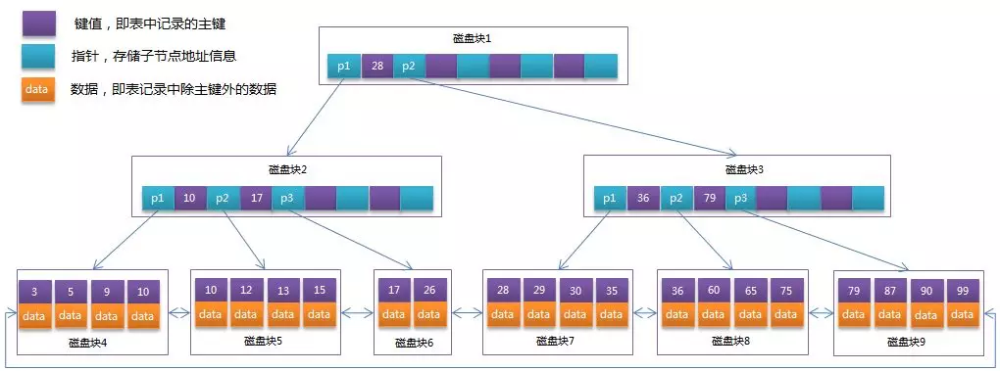
我们看到，B+ Tree 将所有的 data 数据都保存到了叶子节点中，非叶子节点只保存索引(id)和指针。
我们假设一个非页子节点是 16kb，每个索引，即主键是 bigint，即 8b，指针为 8b。那么每页能存储大约 1000 个索引（16kb/ 8b + 8b）.
而一颗 3 层的 B+树能够存储多少索引呢？如下图：
大约能够存储 10 亿个索引。通常 B+ 树的高度在 2-4 层，由于 MySql 在运行时，根节点是常驻内存的，因此每次查找只需要大约 2 -3 次 IO。可以说，B+ 树的设计，就是根据机械磁盘的特性来进行设计的。
B+Tree对比BTree的优点：
B-树和B+树的区别在于B+树所有键值全部保存在叶子节点，而B-树则不然，B-树的键值根据树的结构分布在整个树上。而**Mysql为什么要采用B+树索引呢？**
1.遍历方便.B+树可以将键值保存在（线性表【数组或链表】）中，遍历线性表比索引树要快，因为保存在线性表中数据存储更加密集，B-Tree分散的
存储会导致更多的随机I/O,对于磁盘访问，随机I/O是比顺序I/O慢很多的，因为随机I/O需要额外的磁头寻道操作。顺序I/O有效减少寻道的次数
2.插入更新索引树时可以避免移动节点.
3.遍历任何节点的时间复杂度相同，即访问路径总是从根节点到叶子节点.相比B-树,访问时间略长.所以某些高频访问的搜索采用B-树，即访问频率越高使其距离根节点越近。
4.（也许是最重要的）范围查找方便。对于[A,B]区间的范围查找，B-树索引可以直接找到A,B对应的线性表中节点，只需要返回区间的所有节点
即为目标结果。而B-树则稍显麻烦需要继续遍历索引树。
在 InnoDB 中，索引使用的数据结构是 B+ Tree，这里的 B 是 Balance 的意思。B 类树的一个很鲜明的特点就是树的层数比较少，而每层的节点都非常多，树的每个叶子节点到根节点的距离都是相同的（这也是为什么叫 Balance Tree 的原因），另外，树的每一个节点都是一个数据页，这样每个节点只需要一次 IO 就可以全部读取。这样的结构保证了查询数据时能尽量少地进行磁盘 IO，同时保证 IO 的稳定性。
带顺序索引的B+Tree¶
一般在数据库系统或文件系统中使用的B+Tree结构都在经典B+Tree的基础上进行了优化，增加了顺序访问指针。
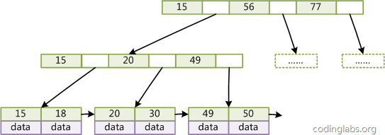
在B+Tree的每个叶子节点增加一个指向相邻叶子节点的指针，就形成了带有顺序访问指针的B+Tree。做这个优化的目的是为了提高区间访问的性能，例如如果要查询key为从18到49的所有数据记录，当找到18后，只需顺着节点和指针顺序遍历就可以一次性访问到所有数据节点，不用从头再查询一次，极大提到了区间查询效率。
聚簇索引和非聚簇索引¶
MySQL中最常见的两种存储引擎分别是MyISAM和InnoDB，分别实现了非聚簇索引和聚簇索引。
前段时间看到一个问题：“你知道为什么InnoDB非主键索引普遍比主键索引要慢吗？”答案是InnoDB使用了聚簇索引，主键索引主需要查询一次，而非主键索引需要查询两次。
为什么非主键索引需要查询两次呢？且看接下来的内容。
主(聚集)索引与辅助索引¶
首先介绍一下基础的概念。在索引的分类中，我们可以按照索引的键是否为主键来分为“主索引”和“辅助索引”，使用主键键值建立的索引称为“主索引”，其它的称为“辅助索引”。因此主索引只能有一个，辅助索引可以有很多个。
为什么需要用到辅助索引？因为前面我们介绍了，查询语句如果想要使用索引，是需要满足**最左匹配**原则的。有时候我们的查询并不会使用到主键列，所以需要在其它列建立索引，即辅助索引。((通过二级索引查出对应主键，拿主键回表查主键索引得到数据， 二级索引可筛选掉大量无效记录，提高效率))
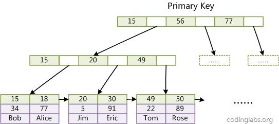
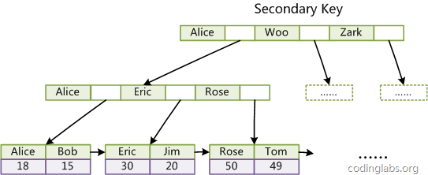
非聚簇索引¶
非聚簇索引的主索引和辅助索引几乎是一样的，只是主索引不允许重复，不允许空值，他们的叶子结点的key都存储指向键值对应的数据的物理地址。
非聚簇索引的数据表和索引表是分开存储的也就是说指向的是一个地址。非聚簇索引中的数据是根据数据的插入顺序保存。因此非聚簇索引更适合**单个数据的查询**。插入顺序不受键值影响。
聚簇索引¶
聚簇索引的主索引的叶子结点存储的是键值对应的数据本身，辅助索引的叶子结点存储的是**键值对应的数据的主键**键值。因此主键的值长度越小越好，类型越简单越好。
聚簇索引的数据和主键索引存储在一起。
聚簇索引的数据是根据主键的顺序保存。因此适合按主键索引的区间查找，可以有更少的磁盘I/O，加快查询速度。但是也是因为这个原因，聚簇索引的插入顺序最好按照主键单调的顺序插入，否则会频繁的引起页分裂（BTree插入时的一个操作），严重影响性能。
在InnoDB中，如果只需要查找索引的列，就尽量不要加入其它的列，这样会提高查询效率。
一张图说明聚簇索引与非聚簇索引的区别：
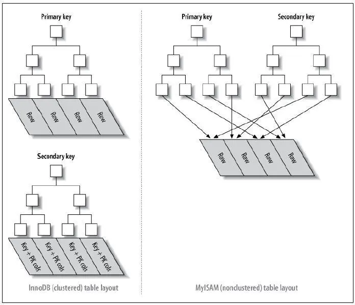
聚簇索引的优点有：
-
范围查询效率更高；
-
特别适合有一小部分热点数据频繁读写的场景；
-
通过主键访问数据时快速可达；
访问聚簇索引速度应该保证足够快，主键不宜选择过大存储需求的字段，例如UUID，另外非聚簇索引需要额外保存主键，主键太长存储需求较大。
也不宜选择字符串：一.字符串比较速度较数字慢，二.字符串插入时更加无序，索引树分裂合并相对更加频繁，出现更多磁盘碎片 。当有字符串和数字都能满足代理主键【该主键与业务无关只是添加一列主键保证记录唯一性】需求时，应当优先选择数字
做主键，但是如果逻辑主键【业务中有作为主键的列，也可选为主键，即为逻辑主键】是字符串类型，那也应该选择其作为主键，因为字符串相比数字性能差别不是很大。
知道了索引的设计，我们能够知道另外一些信息：
- MySql 的主键不能太大，如果使用 UUID 这种，将会浪费 B+ 树的非叶子节点。
- MySql 的主键最好是自增的，如果使用 UUID 这种，每次插入都会调整 B+树，从而导致页分裂，严重影响性能。
那么，如果项目中使用了分库分表，我们通常都会需要一个主键进行 sharding，那怎么办呢？在实现上，我们可以保留自增主键，而逻辑主键用来作为唯一索引即可。
数据库建立索引常用的规则如下：¶
1、表的主键、外键必须有索引； 2、数据量超过300的表应该有索引； 3、经常与其他表进行连接的表，在连接字段上应该建立索引； 4、经常出现在Where子句中的字段，特别是大表的字段，应该建立索引； 5、索引应该建在选择性高的字段上； 6、索引应该建在小字段上，对于大的文本字段甚至超长字段，不要建索引； 7、复合索引的建立需要进行仔细分析；尽量考虑用单字段索引代替：
8、频繁进行数据操作的表，不要建立太多的索引； 9、删除无用的索引，避免对执行计划造成负面影响；
对千万级MySQL数据库建立索引的事项及提高性能的手段¶
一、注意事项：¶
首先，应当考虑表空间和磁盘空间是否足够。我们知道索引也是一种数据，在建立索引的时候势必也会占用大量表空间。因此在对一大表建立索引的时候首先应当考虑的是空间容量问题。 其次，在对建立索引的时候要对表进行加锁，因此应当注意操作在业务空闲的时候进行。
二、性能调整方面：¶
首当其冲的考虑因素便是磁盘I/O。物理上，应当尽量把索引与数据分散到不同的磁盘上（不考虑阵列的情况）。逻辑上，数据表空间与索引表空间分开。这是在建索引时应当遵守的基本准则。
其次，我们知道，在建立索引的时候要对表进行全表的扫描工作，因此，应当考虑调大初始化参数db_file_multiblock_read_count的值。一般设置为32或更大。
再次，建立索引除了要进行全表扫描外同时还要对数据进行大量的排序操作，因此，应当调整排序区的大小。
9i之前，可以在session级别上加大sort_area_size的大小，比如设置为100m或者更大。
9i以后，如果初始化参数workarea_size_policy的值为TRUE，则排序区从pga_aggregate_target里自动分配获得。
最后，建立索引的时候，可以加上nologging选项。以减少在建立索引过程中产生的大量redo，从而提高执行的速度。
MySql在建立索引优化时需要注意的问题¶
设计好MySql的索引可以让你的数据库飞起来，大大的提高数据库效率。设计MySql索引的时候有一下几点注意：
1，创建索引¶
对于查询占主要的应用来说，索引显得尤为重要。很多时候性能问题很简单的就是因为我们忘了添加索引而造成的，或者说没有添加更为有效的索引导致。如果不加索引的话，那么查找任何哪怕只是一条特定的数据都会进行一次全表扫描，如果一张表的数据量很大而符合条件的结果又很少，那么不加索引会引起致命的性能下降。但是也不是什么情况都非得建索引不可，比如性别可能就只有两个值，建索引不仅没什么优势，还会影响到更新速度，这被称为过度索引。
2，复合索引¶
比如有一条语句是这样的：select * from users where area=’beijing’ and age=22; 如果我们是在area和age上分别创建单个索引的话，由于mysql查询每次只能使用一个索引，所以虽然这样已经相对不做索引时全表扫描提高了很多效 率，但是如果在area、age两列上创建复合索引的话将带来更高的效率。如果我们创建了(area, age, salary)的复合索引，那么其实相当于创建了(area,age,salary)、(area,age)、(area)三个索引，这被称为最佳左前缀 特性。因此我们在创建复合索引时应该将最常用作限制条件的列放在最左边，依次递减。
3，索引不会包含有NULL值的列¶
只要列中包含有NULL值都将不会被包含在索引中，复合索引中只要有一列含有NULL值，那么这一列对于此复合索引就是无效的。所以我们在数据库设计时不要让字段的默认值为NULL。
4，使用短索引¶
对串列进行索引，如果可能应该指定一个前缀长度。例如，如果有一个CHAR(255)的 列，如果在前10 个或20 个字符内，多数值是惟一的，那么就不要对整个列进行索引。短索引不仅可以提高查询速度而且可以节省磁盘空间和I/O操作。
5，排序的索引问题¶
mysql查询只使用一个索引，因此如果where子句中已经使用了索引的话，那么order by中的列是不会使用索引的。因此数据库默认排序可以符合要求的情况下不要使用排序操作；尽量不要包含多个列的排序，如果需要最好给这些列创建复合索引。
6，like语句操作¶
一般情况下不鼓励使用like操作，如果非使用不可，如何使用也是一个问题。like “%a%” 不会使用索引而like “aaa%”可以使用索引。
7，不要在列上进行运算¶
select * from users where YEAR(adddate)
8，不使用NOT IN和操作¶
NOT IN和操作都不会使用索引将进行全表扫描。NOT IN可以NOT EXISTS代替，id3则可使用id>3 or id
数据库设计范式¶
什么是范式：简言之就是，数据库设计对数据的存储性能，还有开发人员对数据的操作都有莫大的关系。所以建立科学的，规范的的数据库是需要满足一些
规范的来优化数据数据存储方式。在关系型数据库中这些规范就可以称为范式。
什么是三大范式：
第一范式：当关系模式R的所有属性都不能在分解为更基本的数据单位时，称R是满足第一范式的，简记为1NF。满足第一范式是关系模式规范化的最低要
求，否则，将有很多基本操作在这样的关系模式中实现不了。
第二范式：如果关系模式R满足第一范式，并且R得所有非主属性都完全依赖于R的每一个候选关键属性，称R满足第二范式，简记为2NF。
第三范式：设R是一个满足第一范式条件的关系模式，X是R的任意属性集，如果X非传递依赖于R的任意一个候选关键字，称R满足第三范式，简记为3NF.
**注：**关系实质上是一张二维表，其中每一行是一个元组，每一列是一个属性
主从复制¶
主要涉及三个线程：binlog 线程、I/O 线程和 SQL 线程。 binlog 线程 ：负责将主服务器上的数据更改写入二进制日志（Binary log）中。 I/O 线程 ：负责从主服务器上读取二进制日志，并写入从服务器的中继日志（Relay log）。 SQL 线程 ：负责读取中继日志，解析出主服务器已经执行的数据更改并在从服务器中重放（Replay）
读写分离¶
主服务器处理写操作以及实时性要求比较高的读操作，而从服务器处理读操作。
- 读写分离能提高性能的原因在于： 主从服务器负责各自的读和写，极大程度缓解了锁的争用； 从服务器可以使用 MyISAM，提升查询性能以及节约系统开销； 增加冗余，提高可用性。 读写分离常用代理方式来实现，代理服务器接收应用层传来的读写请求，然后决定转发到哪个服务器